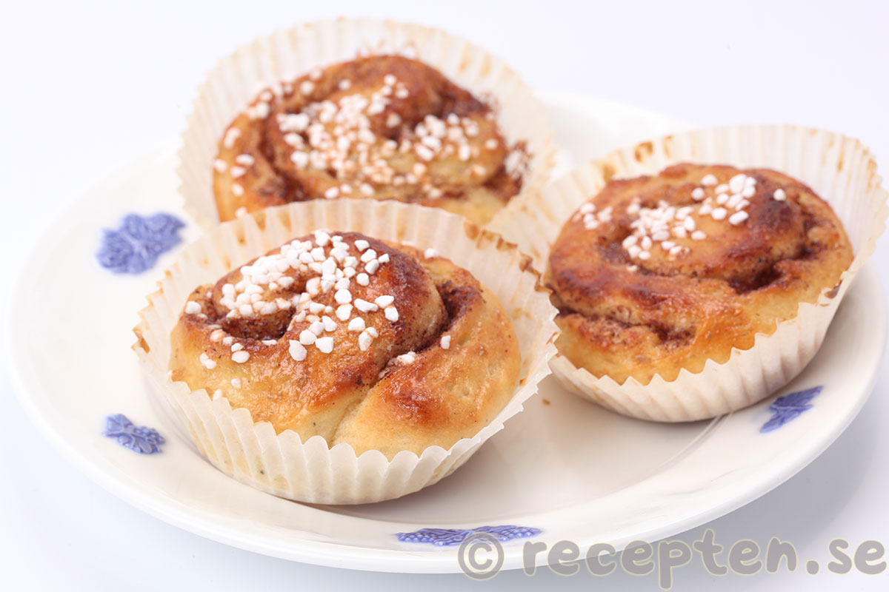

Cinnamon Rolls

Description
This classic Swedish baked treat is often eaten at Fika, the traditional Swedish afternoon coffee break.
The buttery cinnamon filling melts perfectly and mouthwateringly into the fluffy yeasted dough. A similar recipe uses cardamon istead of cinnamon.
Ingredients
- 1 packet of yeast
- 150g + 100g butter
- 5dl milk
- 1dl + 1dl confectioner's sugar
- 1 pinch of salt
- etc
Steps
- Mix dough ingreients togerher into a smooth dough. Let rise for approximately 90 minutes in a warm place.
- Mix the filling ingredients. Do NOT skimp on the cinnamon!
- Roll out the dough and liberally slather the filling onto it.
- Roll up the dough into a roll.
- Cut the roll into 2 inch slices (or adjust to desired thickness).
- Place slices into cupcake moulds.
- Bake at 190 degrees C for 25 mintutes.
- Cool on a rack. Feel free to enjoy while still warm. Freezes well for up to a month.